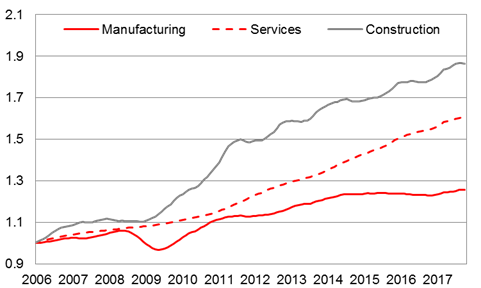
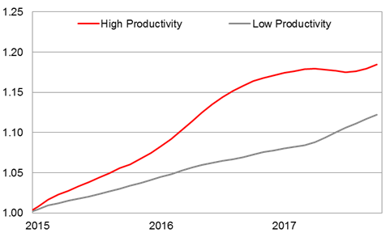

For a life-long pursuit of wisdom there are no choices but to persevere in learning. Because simply enough we are not going to shake hands with the Devil in a Faustian Bargain.
BIS has released an article on Global Factors and Trend Inflation in January. I have learned a new term called “Inflation Gap” which was missing in the note circulated previously. So I have to add “Inflation Gap” to the terminology section.
“Inflation Gap” means nothing but the distance between the actual inflation level (both headline AND core) and the “Trend Inflation”. In a sense “Inflation Gap” has a temporary nature.
Similar to “Output Gap”, “Inflation Gap” can turn positive or negative. There are times when both headline and core inflation can deviate from their longer-term trends. Especially foreign developments play a significant role in the emergence of “Inflation Gap”. For instance, fluctuations in commodity or import prices can be shown among several reasons with a potential to trigger an “Inflation Gap”.
Regarding “Trend Inflation” it’s widely assumed that domestic monetary policies affect it on the long term. Due to the temporary nature of the “Inflation Gap”, its effects on the “Trend Inflation” usually tend to be limited.
One needs to differentiate that “Trend Inflation” and “Core Inflation” are two different things. Core inflation also has a “Gap” in the short-term and a “Trend” in the long term.
Last year fluctuations in the commodity prices and import prices pushed Turkey’s inflation rate to double digits creating a positive “Inflation Gap”. As pressures abate on commodity and import prices the “Inflation Gap” may diminish further supporting the dis-inflationary process this year.
One also needs to pay attention to the fact that volatility in the inflation rate occurs not only due to “Base Effect”s but “Inflation Gap” as well.
Early in December we were of the opinion not to give up hope on the assumed dis-inflation for 2018. January is the month when annual price adjustments take place. The path inflation will follow this year seems clear. January inflation provides necessary information on the level of the path.
New Chairman, New Era, New Targets?
Key Take-aways:
- Changes in FED’s key management roles may shape a new mind-set towards policy implementation.
- After the stagflation years of 70’s inflation targeting proved effective in reaching price stability.
- Popularity of inflation targeting started to wane due to symmetric nature of the target level.
- The concept of “threshold inflation” should not be overlooked.
- US economic policies centered on (full) “employment” from a historical perspective.
Yesterday morning US Senate has confirmed President Donald Trump’s nominee Jerome Powell as FED Chairman. At the beginning of February Chairwoman Janet Yellen will hand over her job to Powell.
Changes in FED’s board of governors are not limited with the Chair. Other board members are in the process of nomination, as well. Therefore it’s very realistic to assume that FED’s mindset on monetary policies may change in coming years. The biggest question mark remains what will happen to inflation targeting.
Actually debate about inflation targeting is an ongoing topic. We kept the issue on our radar for over two years: “Both Wings Hurt”, August 24th, 2015.
Inflation targeting, represented by 2% in developed countries, left central banks with a serious reputation issue in the wake of global financial crisis. Questions regarding functionality of the inflation targeting linger in recent economic literature. Daniel Tarullo, a former FED governor, admitted openly that central banks are pursuing inflation targeting despite lacking a substantial understanding of such a phenomenon (Monetary Policy Without a Working Theory of Inflation, October 2017).
Thinking briefly, inflation became a priority in central banking as a response to supply-side related oil shock of the 70's. In fact, having experienced the Great Depression main subject of economic policies and practices in the United States usually target (full) employment. As contemporary economic commentators, we prefer to overlap inflation with central banking since we are born into the inflation boom following stagnation of the 1970s. However, the period from the seventies to the present day can be considered a short period in the relatively long history of humanity.
Price stability has become a priority in global economy due to the bitter taste of stagflation period. Inflation targeting, launched in 1989 by the New Zealand Central Bank and then spread to Canada in 1991, has become a serious controversy in the very same countries today. Having emerged victorious in the elections held in New Zealand last October, Labor Party included a change in the central bank's mandate among election promises. Concurrently, Bank of Canada (BoC) executives made statements echoing that debate about inflation targeting should begin.
90's were a time-period when inflation targeting became popular, since developed countries literally knocked out the "inflation monster". At the turn of the new millennium, leading economic magazines declared their ultimate victory over inflation. (The period we talked about was when gold prices fell and gold lost its appeal, then. The rising hope of "reflation" last year has resulted in a partial recovery of gold prices recently.)
In the meantime, we see that Developed Countries failed in generating inflation. The main reason why inflation targeting starts to be discussed is the failure in raising the inflation to the desired level.
At this point, it is useful to define various concepts related to inflation:
- Headline inflation: Sets the general price level. In a country, it is produced from the averages of the item prices in the consumer and producer baskets.
- Core inflation: Inflation rate where items considered having volatile prices are excluded from the basket. Volatility stems from sources beyond the reach of monetary policy hence not sensitive to demand conditions.
- Trend inflation: Used to indicate the overall course of price levels. For example, there may be temporary increases in the downward trend in inflation for a variety of reasons (e.g. supply chain problems). Nevertheless, the trend will keep price level in a dis-inflationary path.
- Inflation forecast: It is foreseeing the value inflation will take after a certain period of time. For example, the current estimate of the central bank's end-2018 is 7%.
- Inflation target: It is an arbitrary value. It is usually around 2% in Advanced Countries and higher in Emerging Countries. 5% rate was set as inflation target in Turkey.
- Threshold inflation: When passed, a country’s prosperity is thought to be adversely affected. It's a controversial value. For developed countries threshold level is thought to be around 5% while in developing countries it may reach double digit figures. Anyways, it is above the "inflation target".
Because of Irving Fischer's "debt-deflation spiral", inflation is indeed desirable. However, it is desirable to keep inflation at "reasonable" levels. Because of the "threshold inflation" approach, inflation will hurt the wealth of a country if it rises too high. A typical example that comes to mind is Turkey - South Korea divergence.
Former FED Chairman Ben Bernanke stated last week that FED may engage in a process to evaluate its objectives. In the upcoming period, it may be thought that the FED could update their goals in alternative ways by:
1. Setting a higher value for inflation target (e.g. 4%),
2. Aiming a price-level target, or
3. Switching to nominal GDP growth target.
It's clear that Turkey faces inflationary pressures. As inflation concerns remain high pricing behavior may get affected adversely. This year, price stability should top the economic agenda of authorities in order to reduce inflation to single digits permanently.
Despite the exceptional situation in Turkey one needs to watch current central banking literature closely. At the same time, we have to keep track of economic history and fully grasp the stages that developed countries passed in reaching their civilization levels. The role of employment policies in the evolution of the US economy is great. Turkey’s "Employment Mobilization" initiative, which the government has pursued last year, compares to "Employment Act" signed by US President Harry Truman in 1946 following the “Full Employment Bill” presented to the US Congress in 1945.
Employment contributes to economic and financial stability via three channels:
1. Higher private consumption by increasing house-hold income,
2. Higher tax revenues due to direct taxation, and
3. Better asset quality in banking sector thanks to loan re-payments.
Turkey, overcame challenges last year in accommodating her citizens with new job opportunities (Figure 1). Over a million additional employment was created bringing the total number of the employed workforce to 28.6 million. Of the total 28.6 million employees, 15.5 million are employed in the services sector. We can categorize the business lines of the service sector in terms of higher productivity and lower productivity. For example; finance, defense industry, education, health, and arts can be considered more productive occupations. Such a classification clarifies that Turkey did not just create plain job opportunities she has also strengthened her productivity with more qualified occupations (Figure 2). As a supply side variable employment prospects can keep the country stable in her 5% + growth path.
Figure 1: Evolution of employment by sectors (number of individuals employed, Jan 2006 = 1, 12-month moving averages).

Source: TurkStat, Bloomberg, Ziraat
Figure 2: Evolution of services employment according to productivity level classification* (number of individuals employed, Jan 2015 = 1, 12-month moving averages).

*IT, Finance, Professional Technical, Education, Health, and Arts are considered to be among higher productivity occupations.
Source: TurkStat, Bloomberg, Ziraat
Daily Markets Observer: Both Wings Hurt (Fischer, Market Pricing, and Inflation - August 24th 2015)
"BOTH WINGS HURT"
We had this graph showing that trade was not propelling itself enough that could generate growth ("Trade Files II", July 1st 2015). Instead countries are preferring to de-value their currencies.
Now with Brent oil below USD 45 per barrel it is apparent that inflation is missing in the Picture as well.
According to former FED Chairman Greenspan stocks have two drivers: Growth and inflation.
S&P500 index closed on Friday down by 3,2% below 2.000 for the first time since end January. This morning the sell-off continues in Asia with SHCOMP down by 8,5% and Nikkei225 down by 3,5%.
On Saturday 19:25 local time we are going to watch what FED vice-chair Stanley Fisher talks about inflation.
Last year FED Chairwoman Yellen had two important announcements.
1.One was her Jackson Hole speech which signaled that the economy will reach equilibrium at a lower capacity utilization level. That remark allowed us to estimate that long term rates will be lower. Consequently dots on the FOMC projections were lowered.
2.Her second important announcement cam in April last year. It was about inflation modelling. She took a critical stance in admitting that central bank models could not catch inflation accurately.
The 2% target applied by Developed Countries has been questioned for a while. A leading figure who questions the 2% target is IMF's former chief economist Oliver Blanchard. This summer IMF published another working paper calling to raise the target to 4%. The level at which the most notorious of all hawks Paul Volcker chose to run inflation.
Whatever Fisher is going to tell us will provide input for the market valuation. Last year Yellen addressed the employment side of the dual mandate. This year Fischer may complete the mandate targeting price stability. We expect Fisher to be inflationary! Stocks need inflation as this sell-off deepens.
PS / Market Implication: The sell-off in stocks from top levels and a rebound in gold from bottom levels indicates markets approaching Fischer's speech "hedged". If Fisher talks dis-inflationary sell-off can continue and gold may reverse to the downside as well. If Fischer talks inflationary stocks can rebound and gold may get support.